農園紹介
Hachidori Farm（ハチドリファーム）は、オリーブ・水稲・ブルーベリー・いちじくを中心に栽培し、ドローンサービスを通じて次世代のスマート農業の実現を目指しています。
圃場（ほじょう）所在地
取手 第1圃場：茨城県取手市井野台
取手 第2圃場：茨城県取手市井野井野1140-1・1141・1148〜1150
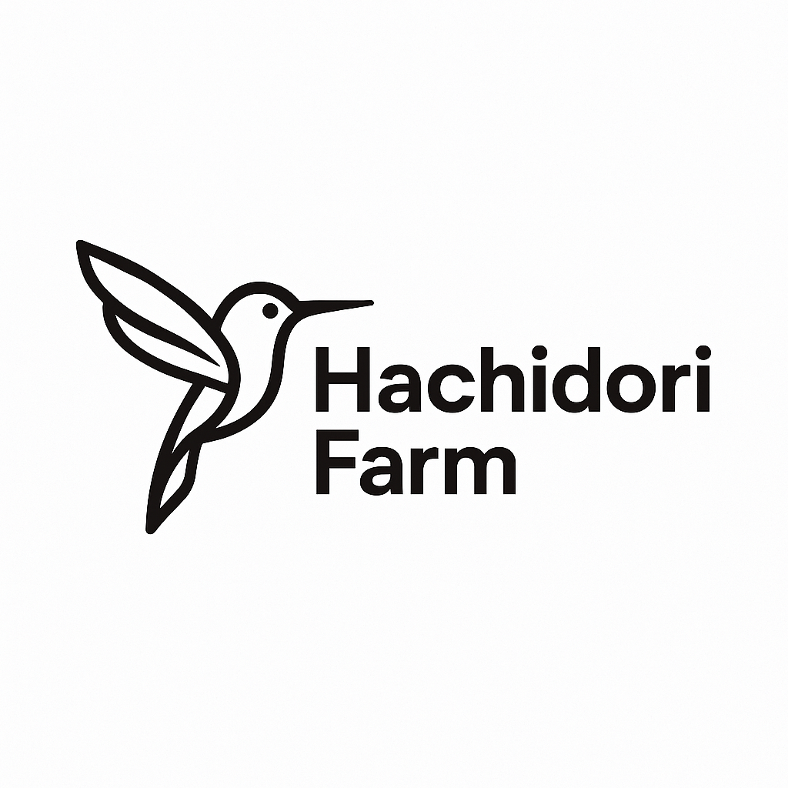
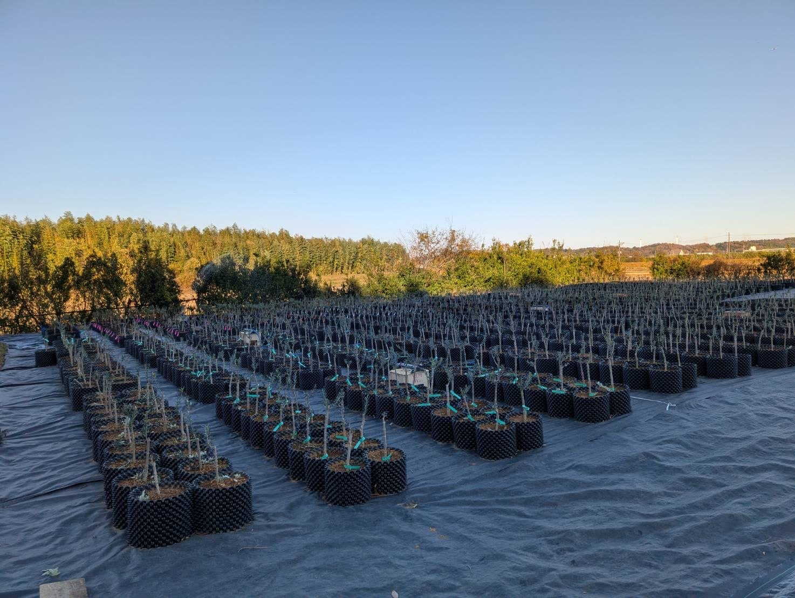
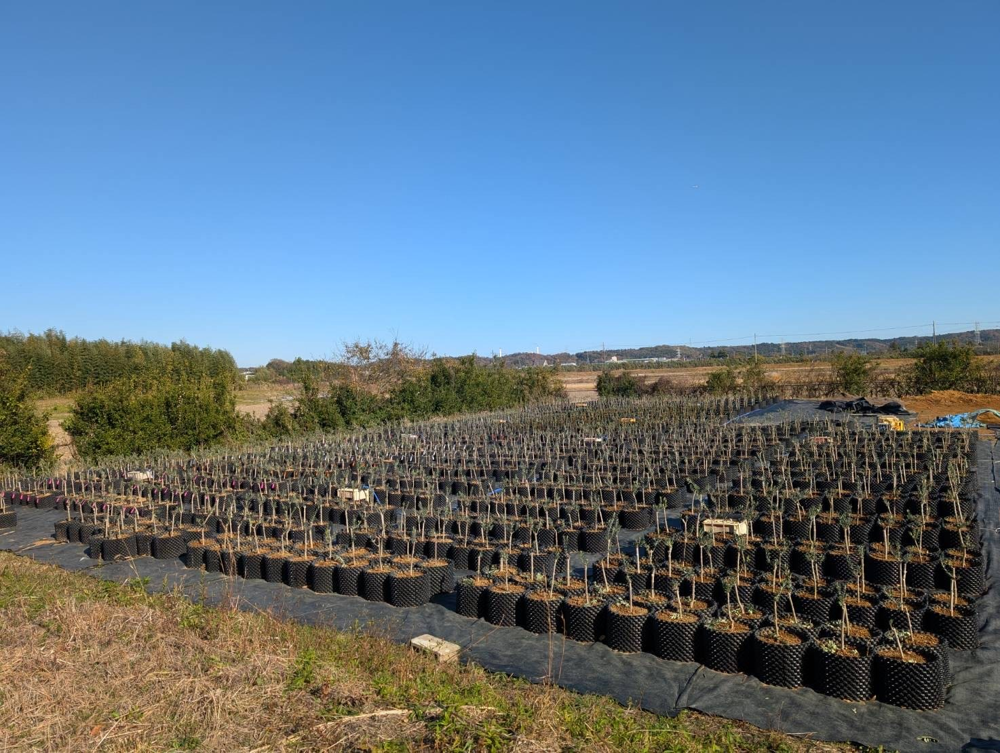
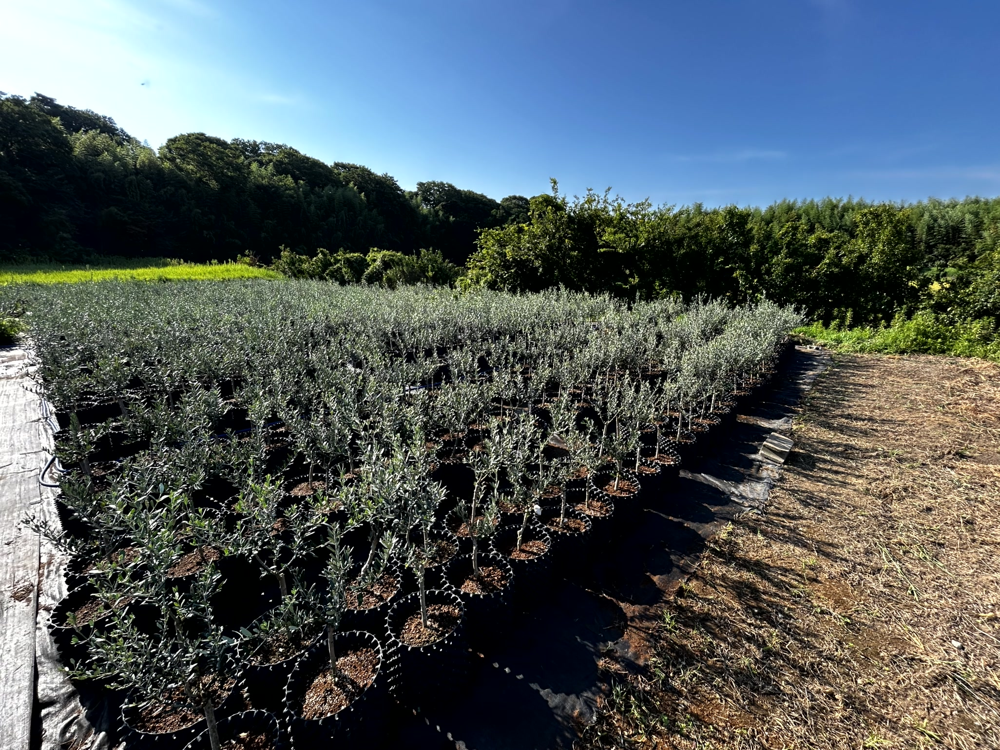
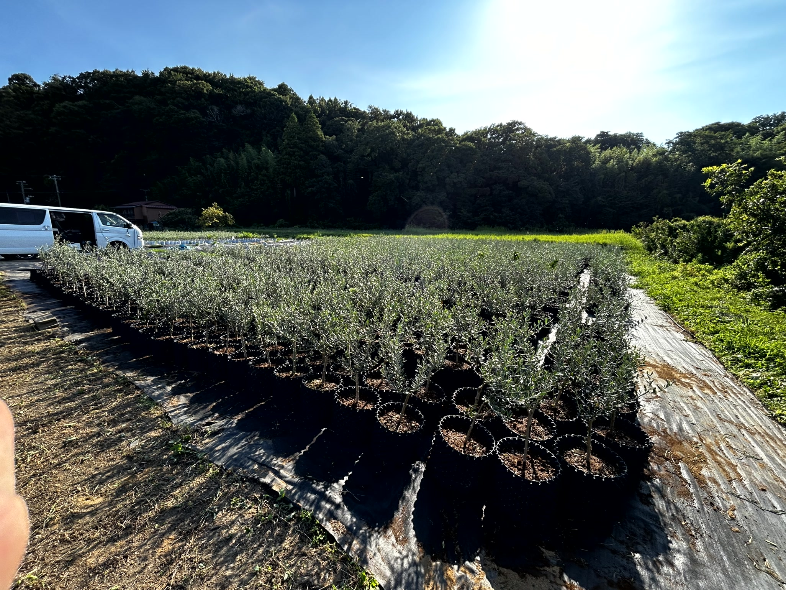
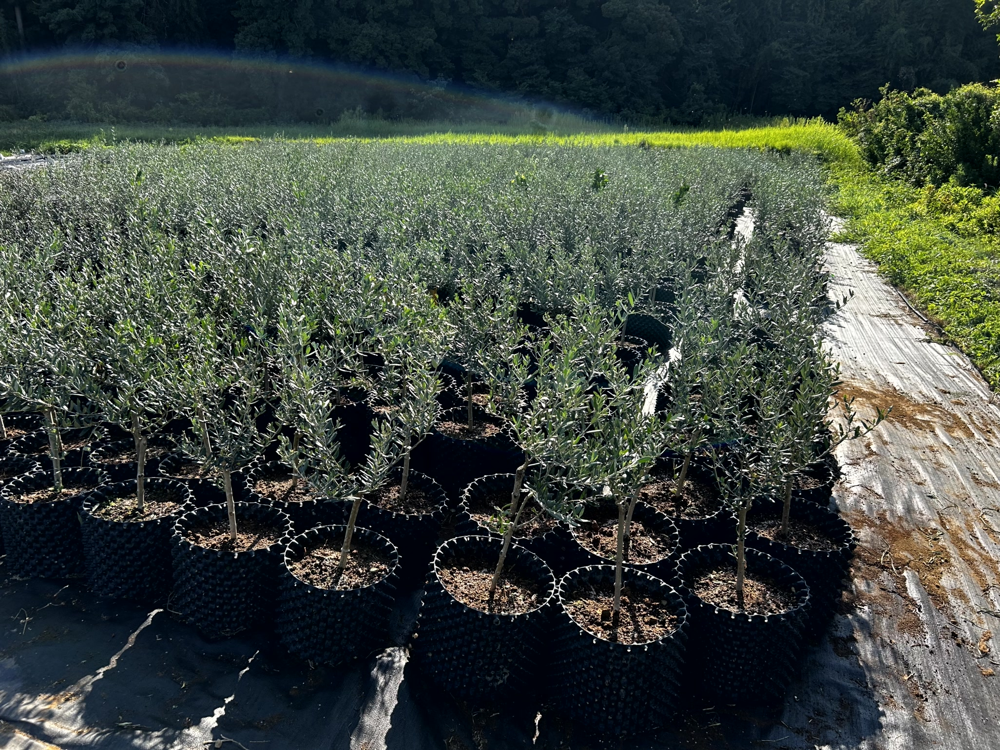
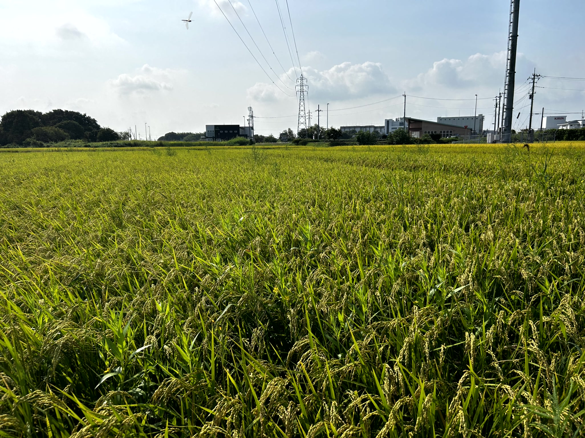
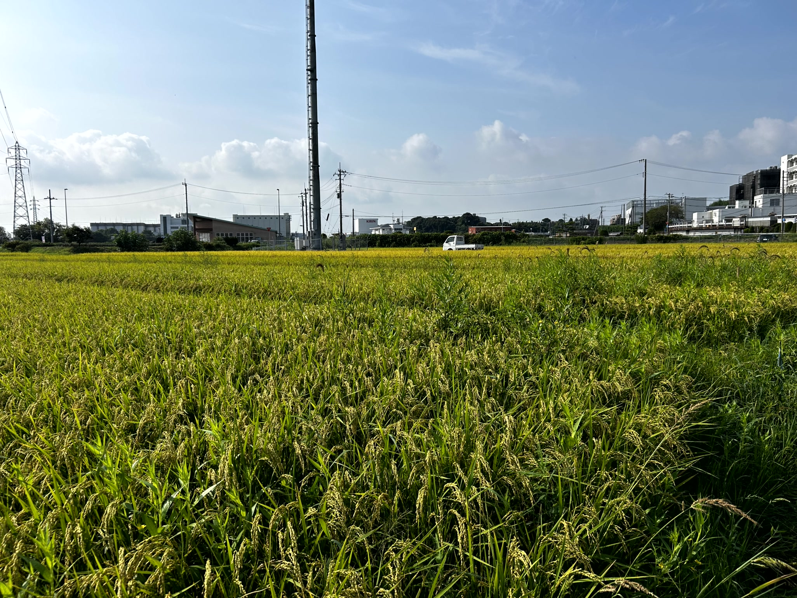

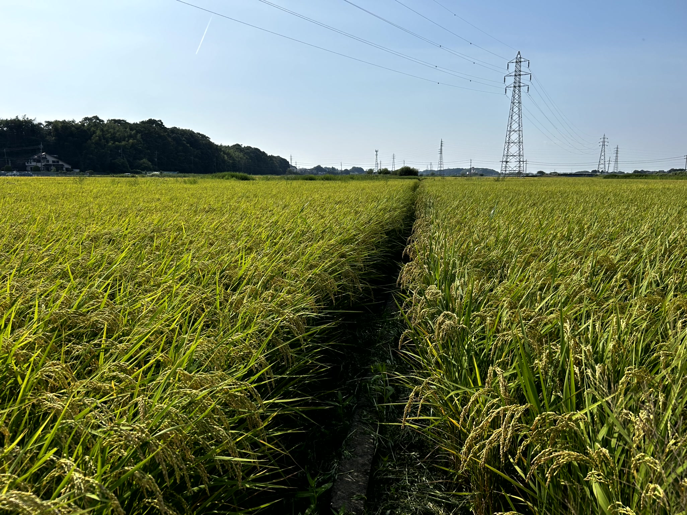
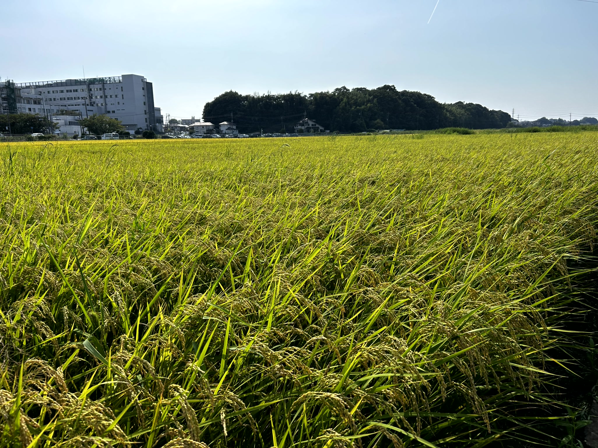


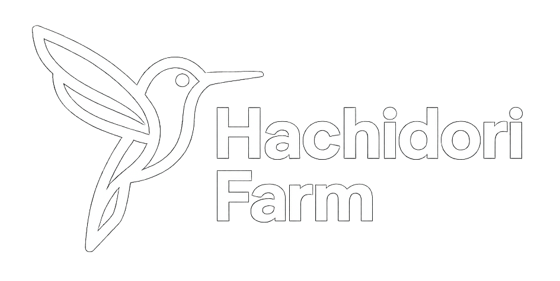
自然と共に、持続可能な農業を。
Hachidori Farm（ハチドリファーム）は、オリーブ・水稲・ブルーベリー・いちじくを中心に栽培し、ドローンサービスを通じて次世代のスマート農業の実現を目指しています。
取手 第1圃場：茨城県取手市井野台
取手 第2圃場：茨城県取手市井野井野1140-1・1141・1148〜1150